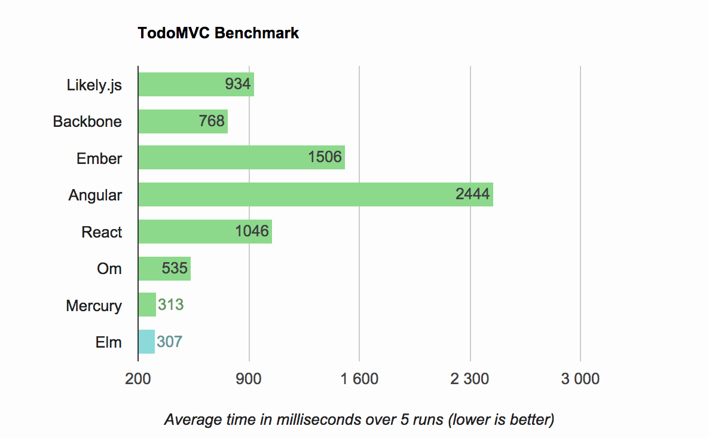

ul
for key, value in list
li
"index {{ key }} has value {{ value }}"
The language has only 5 Language primitives: if, for, else, elseif and component.
Any other will create an HTML node.
for key, value in list
h1
{{ key }}
p
{{ value }}
An expression is just JavaScript function executed within the current template context.
p
{{ 1 + 4 }}
# <p>5</p>
A context object represent some data. The data can be overshadowed by a new context.
var context = likely.Context({a:1, b:2});
context.get('a');
# <- 1
context.get('b');
# <- 2
# We create a new context with the current context as parent
var context2 = likely.Context({a:3}, context);
context2.get('a');
# <- 3
context.get('b');
# <- 2
A For Node will create a new context that contain the index and the value of the loop.
var template = likely.Template(templateString);
template.repr();You get
Node() at line undefined
HtmlNode(ul) at line 1
ForNode(for key, value in list) at line 2
HtmlNode(li) at line 3
StringNode("index {{ key }} has value {{ item }}") at line 4To render this template to a tree we need a Context object:
var data = {list:[4,5,6]};
var context = likely.Context(data);
var renderTree = template.tree(context);
renderTree.repr();You get a virtual dom tree
Node() at line undefined path
HtmlNode(ul) at line 1 path .0
HtmlNode(li) at line 3 path .0.0
StringNode("index {{ key }} has value {{ item }}") at line 4 path .0.0.0
HtmlNode(li) at line 3 path .0.1
StringNode("index {{ key }} has value {{ item }}") at line 4 path .0.1.0
HtmlNode(li) at line 3 path .0.2
StringNode("index {{ key }} has value {{ item }}") at line 4 path .0.2.0
renderTree.domTree(document.body);
<body>
<ul>
<li>index 0 has value 4</li>
<li>index 1 has value 5</li>
<li>index 2 has value 6</li>
</ul>
</body>
Likely.js can create a DOM diff using 2 virtual DOM tree
var data = {list:[4,5,6]};
var context = likely.Context(data);
var renderTree = template.tree(context);
# change the data
data.list = [4,10,6,9];
var newRenderTree = template.tree(context);
var diff = renderTree.diff(newRenderTree);
diff[0]
{action: "stringmutate", node: RenderedNode,
value: "index 1 has value 10", path: ".0.1.0"}
diff[1]
{type: "new_node", action: "add",
node: RenderedNode, path: ".0.4"}
To apply a DOM diff you need to initialize a DOM element with the first tree.
var dom = document.getElementById('container');
dom.innerHTML = ""; // emtpy the DOM
renderTree.domTree(dom); // initialize the DOM
likely.applyDiff(diff, dom); // apply the dom changes
The Binding object is a simple interface that handle DOM initialization, Events, bi-directionnal data binding and diff throttling.
var dom = document.getElementById('container');
var template = likely.Template(templateString);
var data = {a:1, b:2, c:[1, 2, 3]};
var binding = new likely.Binding(dom, template, data);
binding.init();
You are in charge of notifying the Binding when you change the data.
data.list = newList; // Modify the data.
data.selected = 10;
binding.update(); // Create a diff and apply it.
Although this is trivial to implement:
function update(){
binding.update();
window.requestAnimationFrame(update);
}
update();
